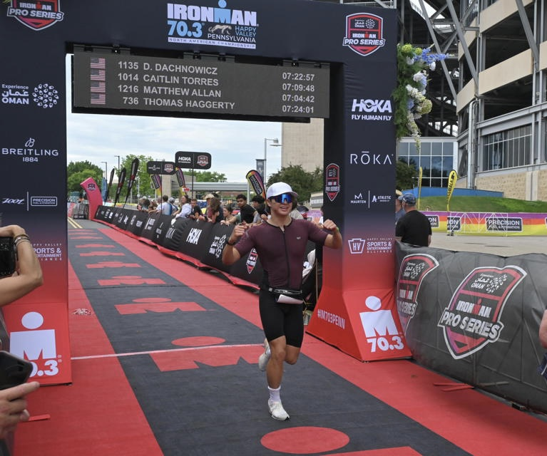

Hi, I'm William
My friends would describe me as funny, a little emotional (in the good way), and very approachable. That last one is a compliment I'll never forget.
Why I build things
I've always been a hands-on person. Growing up, I played around with everything I could: Legos, domino and popsicle stick chain reactions, juggling, pen spinning, backflips, and the Rubik's cube, which I still love solving.
More than anything, I was always curious about how things worked. How does a microwave heat food when nothing inside it is hot? How did humans build computers out of nothing but on and off signals? Engineering is where I get to keep asking those questions.
Why I train
Endurance training keeps my life on a schedule, but what I really like is that I have to think about it deliberately instead of just going through the motions. For me, it's a place to experiment with improvement, and a way to see long-term results from consistent work.
How I work on a team
I'm the person who keeps action items clear, because I can't stand ambiguous tasks. I truly believe performance and habits are shaped by environment. If I give you a bad description, you'll do a bad job. If I make the who, what, where, when, and how clear, you'll do a good job.
How I recharge
People are usually surprised that even though I'm an extrovert, I enjoy being alone too. It's peaceful, and it gives me time to think. Sometimes I'll stretch or read a short comic. The rest of the time, you'll find me playing video games, doing escape rooms, or playing games with friends.
Quick questions
Games I keep coming back to
Minecraft, Cyberpunk 2077, Valorant, Fortnite, Roblox, Star Wars Battlefront II, and every Plants vs. Zombies
All-time favorite show
Avatar: The Last Airbender
Best way to hang out
Escape rooms and game nights with friends
Puzzle I never get tired of
The Rubik's cube
Along the way
- Top 7 swimmer in Carnegie Mellon program history across 4 events.
- Ironman 70.3 finisher, June 2026.
Photos

images/about-1.jpg

images/about-2.jpg